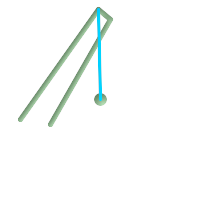
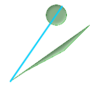

名前
ST_LongestLine — 二つのジオメトリ間の2次元最長ラインを返します。
概要
geometry ST_LongestLine(geometry g1, geometry g2);
説明
二つのジオメトリの2次元長が最長となるポイントを返します。
最長ラインが複数現れた場合には、最初の最長ラインを返します。ラインはg1で始まりg2で終わります。ラインの長さはST_MaxDistanceで返される距離と同じです。
Availability: 1.5.0
例
 ポイントとラインストリングの間の最長となるライン
SELECT ST_AsText(
ST_LongestLine('POINT(100 100)'::geometry,
'LINESTRING (20 80, 98 190, 110 180, 50 75 )'::geometry)
) As lline;
lline
-----------------
LINESTRING(100 100,98 190)
|
 二つのポリゴンの間の最長となるライン
SELECT ST_AsText(
ST_LongestLine(
ST_GeomFromText('POLYGON((175 150, 20 40,
50 60, 125 100, 175 150))'),
ST_Buffer(ST_GeomFromText('POINT(110 170)'), 20)
)
) As llinewkt;
lline
-----------------
LINESTRING(20 40,121.111404660392 186.629392246051)
|
 市内のある場所から別の場所への移動で最長となる直線距離。最長距離はラインの長さと同じとなることに注意して下さい。
SELECT ST_AsText( ST_LongestLine(c.geom, c.geom)) AS llinewkt,
ST_MaxDistance( c.geom,c.geom) AS max_dist,
ST_Length( ST_LongestLine(c.geom, c.geom)) AS lenll
FROM (SELECT ST_MakeValid( ST_Collect(geom)) AS geom
FROM (SELECT ST_Translate( ST_SnapToGrid(
ST_Buffer(
ST_Point(50 ,generate_series(50,190, 50)),
40, 'quad_segs=2'),1), x, 0) AS geom
FROM generate_series(1,100,50) As x) AS foo
) AS c;
llinewkt | max_dist | lenll
---------------------------+------------------+------------------
LINESTRING(23 22,129 178) | 188.605408193933 | 188.605408193933
|